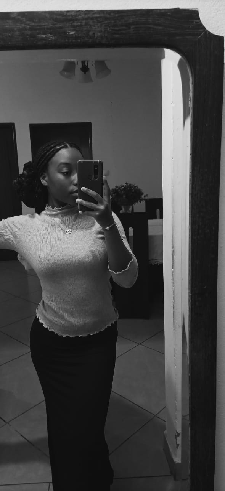
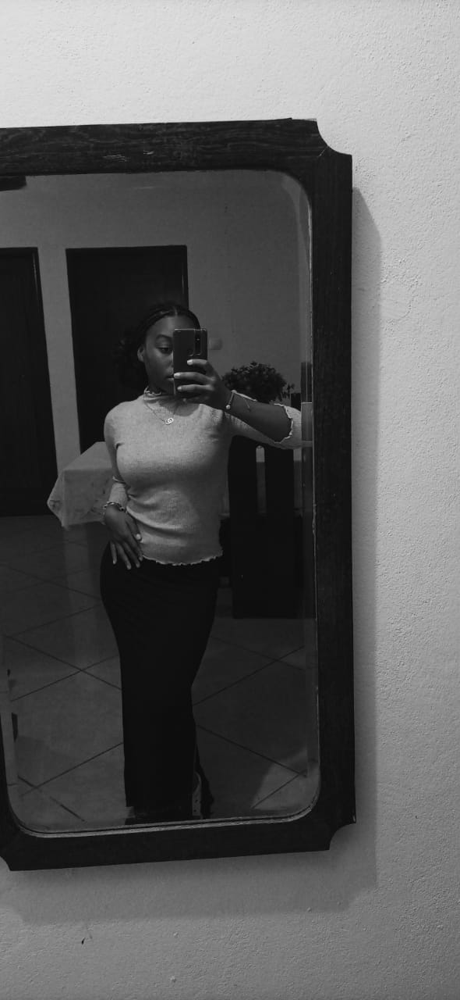
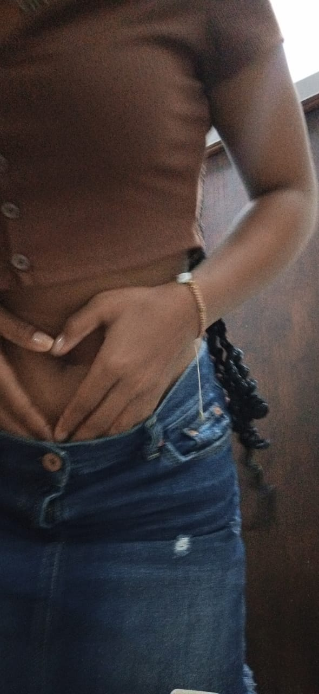

♥ You my girlfriend makes me feel incredibly happy and fulfilled. your presence brings joy and positivity into my life every single day. you supports me, understands me, and loves me unconditionally. I'm grateful for her unwavering support and the way you always brings out the best in me. With you by my side, I feel complete and truly blessed.♥

♥ You make me feel like a true man. you see my strength and encourage me to be the best version of myself. you admiration and respect make me feel confident and capable. With you, I feel empowered to conquer any challenge that comes my way. you value my opinions and appreciates my efforts, making me feel important and valued. Being with you fills me with a sense of masculinity and pride. I'm grateful for the way you support and uplift me, making me feel like a true man. ♥

♥Dear Tatyanna, Today marks our two years and seven months of being together, and I couldn't be happier to celebrate this milestone with you. It has been an incredible journey filled with love, growth, and shared experiences. As we reflect on our time together, we've faced our fair share of challenges and hardships that have caused us pain. But through it all, we've managed to come out stronger, supporting each other with unwavering love and understanding. On this special occasion, I want to express my heartfelt desire for all the negative experiences we've encountered to remain in the past. We've both endured enough hurt, and I wish for nothing but happiness and harmony in our future. Let's leave behind the pain and focus on nurturing the beautiful bond we share. Tatyanna, you have been my rock, my confidante, and my partner in every sense of the word. Your love has brought light into the darkest corners of my life, and I'm eternally grateful for your presence. Together, we have created memories that I will cherish forever. Here's to us, my love, and to the many more years ahead. May our love continue to blossom and flourish, and may we always find solace and strength in each other's arms. Thank you for being by my side, for loving me unconditionally, and for making these two years and seven months the most extraordinary time of my life. With all my love, Gerson Mussavele!♥
♥Would you like to date me everyday til we die?♥
Answer